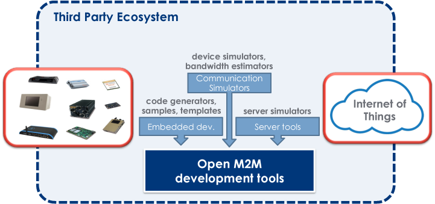

The M2M Industry Working Group aims at providing an IDE built on top of Eclipse that enables development of complete M2M solutions.
We use the Eclipse
platform as a base for the creation of an interoperable and
extensible set of tools to simplify the development of M2M
solutions.
There are different sets of tools that we think
are important to support M2M Developers:

Lua Development Tools provides a complete IDE for the Lua programming language.
You can download a standalone executable for the following platforms: